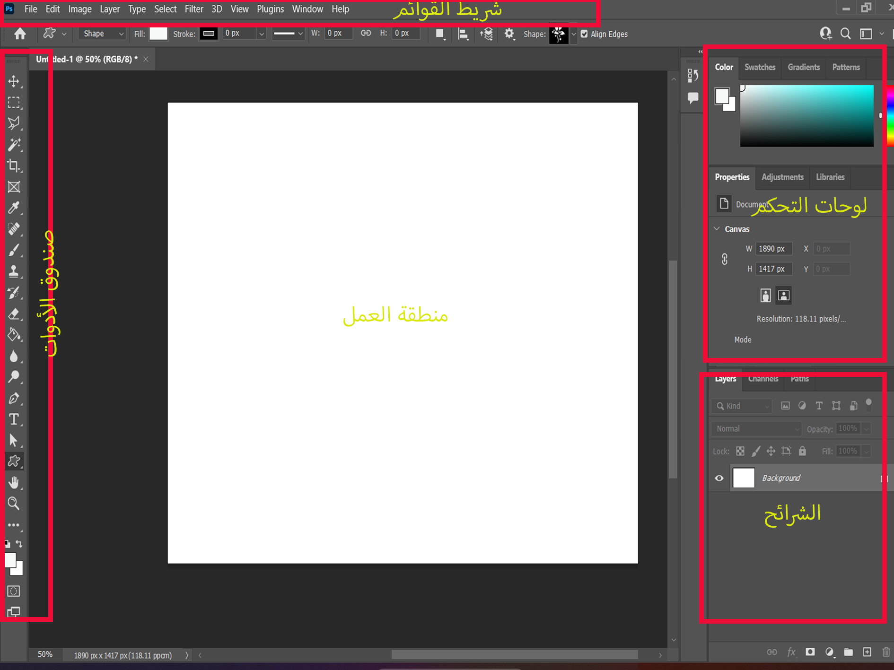

🎨 فوتوشوب -الدرس الاول
🖥️ التعرف على واجهة فوتوشوب
قبل البدء في التصميم، يجب أن تتعرف على واجهة البرنامج وأجزائها المختلفة:
أجزاء واجهة فوتوشوب:
📋 شريط القوائم
يحتوي على جميع الأوامر والوظائف
🛠️ صندوق الأدوات
يحتوي على جميع أدوات الرسم والتعديل
📊 لوحات التحكم
تحتوي على خصائص الطبقات والألوان
🖼️ منطقة العمل
المكان الذي تعمل فيه على التصميم
🛠️ الأدوات الأساسية
إليك أهم الأدوات التي ستحتاجها في بداية رحلتك مع فوتوشوب:
أداة التحديد
مبتدئالاستخدام: لتحديد أجزاء من الصورة
- اختر أداة التحديد من صندوق الأدوات
- اسحب الماوس لتحديد المنطقة المطلوبة
- يمكنك تعديل التحديد باستخدام مفاتيح التحكم
اختصار لوحة المفاتيح: M
أداة الفرشاة
مبتدئالاستخدام: للرسم والتلوين
- اختر أداة الفرشاة
- اضبط حجم الفرشاة من شريط الخصائص
- اختر اللون من لوحة الألوان
- ابدأ الرسم بالضغط والسحب
اختصار لوحة المفاتيح: B
أداة النص
مبتدئالاستخدام: لإضافة النصوص للتصميم
- اختر أداة النص
- انقر في المكان المطلوب
- اكتب النص
- اضبط الخط والحجم من شريط الخصائص
اختصار لوحة المفاتيح: T
أداة الاستنساخ
متوسطالاستخدام: لنسخ أجزاء من الصورة
- اختر أداة الاستنساخ
- اضغط Alt وانقر على المنطقة المراد نسخها
- انقر واسحب في المكان الجديد
- اضبط الشفافية للحصول على تأثير طبيعي
اختصار لوحة المفاتيح: S
📚 دروس عملية خطوة بخطوة
الآن سننتقل للدروس العملية التي ستطبق فيها ما تعلمته:
تعديل إضاءة الصورة
مبتدئالهدف: تحسين إضاءة الصورة المظلمة
- افتح الصورة في فوتوشوب
- اذهب إلى Image > Adjustments > Brightness/Contrast
- اضبط شريط السطوع للزيادة
- اضبط شريط التباين للحصول على وضوح أفضل
- اضغط OK لحفظ التغييرات
تغيير لون عنصر في الصورة
متوسطالهدف: تغيير لون سيارة أو ملابس في الصورة
- حدد العنصر المراد تغيير لونه
- اذهب إلى Image > Adjustments > Hue/Saturation
- اضبط شريط Hue لتغيير اللون
- اضبط Saturation لزيادة أو تقليل كثافة اللون
- اضبط Lightness للتحكم في السطوع
قص صورة من خلفيتها
متوسطالهدف: إزالة الخلفية من صورة شخص
- استخدم أداة التحديد السريع (Quick Selection)
- اسحب على الشخص لتحديده
- اضغط Ctrl+Shift+I لعكس التحديد
- اضغط Delete لحذف الخلفية
- احفظ الصورة بصيغة PNG للحفاظ على الشفافية
إنشاء شعار بسيط
مبتدئالهدف: تصميم شعار نصي بسيط
- أنشئ مستند جديد (Ctrl+N)
- اختر أداة النص واكتب اسم الشركة
- اضبط الخط والحجم واللون
- أضف تأثيرات من Layer > Layer Style
- احفظ الشعار بصيغة PNG
⌨️ اختصارات لوحة المفاتيح المهمة
تعلم هذه الاختصارات لتسريع عملك في فوتوشوب:
اختصارات الملفات
- Ctrl+N - إنشاء مستند جديد
- Ctrl+O - فتح ملف
- Ctrl+S - حفظ الملف
- Ctrl+Shift+S - حفظ باسم
- Ctrl+W - إغلاق الملف
اختصارات التعديل
- Ctrl+Z - التراجع
- Ctrl+Shift+Z - إعادة
- Ctrl+C - نسخ
- Ctrl+V - لصق
- Ctrl+T - تحويل
اختصارات العرض
- Ctrl+0 - عرض كامل
- Ctrl++ - تكبير
- Ctrl+- - تصغير
- Space - أداة اليد
- Tab - إخفاء/إظهار اللوحات
💡 نصائح مهمة للمبتدئين
🎯 نصائح للنجاح في فوتوشوب
مارس يومياً ولا تخف من التجريب - الأخطاء جزء من التعلم!
- احفظ عملك باستمرار: استخدم Ctrl+S كل بضع دقائق
- تعلم الطبقات: استخدم طبقات منفصلة لكل عنصر
- احتفظ بنسخ احتياطية: احفظ نسخة من الملف الأصلي
- استخدم الاختصارات: ستوفر عليك الكثير من الوقت
- مارس على صور مختلفة: جرب تقنيات مختلفة
- تعلم من الأخطاء: كل خطأ يعلمك شيئاً جديداً
- استخدم المراجع: احتفظ بصور مرجعية للاستلهام
- لا تستعجل: التصميم الجيد يحتاج وقت وصبر
🚀 الخطوات التالية
بعد إتقان هذه الأساسيات، يمكنك الانتقال إلى:
- تعلم المزيد من الأدوات المتقدمة
- إتقان تقنيات التلاعب بالصور
- تعلم تصميم الشعارات المعقدة
- إتقان تقنيات الرسم الرقمي
- تعلم تصميم الواجهات والمواقع
📚 موارد إضافية
تذكر أن التعلم عملية مستمرة. استمر في الممارسة واستكشف المزيد من التقنيات المتقدمة!